A root-cause review of the v1.0.3 "rough draft", written to be trusted less than the code it cites and more than the dossier it audits. Every live claim below was reproduced against the installed v1.0.3 binary; every code claim cites a file and line at b40802299.
Every one of the seven reported problems is real, reproduced live, and has an identified root cause. None of them is a tuning problem. Six stem from the same pattern: the Doom Term layer was bolted onto the render path as a render-time snapshot of guesses (wall-clock phase, file sizes, title substrings, a hard-coded "FULL"). No model owns agent state, nothing observes it, and nothing schedules a repaint. The seventh (multiple instances) is a packaging mistake: every Doom Term build script drops the release_bundle feature that carries Warp's single-instance code.
The v1.0.3 evidence dossier does not show otherwise: every "busy"/agent image in its §9–§10 is a hand-built test fixture rendered by the plate crate, never the app. Its test counts are real (9/9 pass), but those tests never touch agent detection, telemetry, tabs, or repaint.
| # | Reported issue | Reproduced live? | Root cause (one line) | Severity |
|---|---|---|---|---|
| R1 | Rail doesn't pulse properly for an active agent | Yes | Phase is read from the wall clock only when the workspace re-renders, which in practice means when some pane's terminal title changes; nothing drives animation frames. "Busy" means "a long-running block exists", so a finished agent idling at its prompt stays "busy" forever. | High |
| R2 | Tabs don't show agent icons / don't pulse | Yes | Horizontal tabs: agent_indicator() is a stub returning None. All tabs: status type aliased to Infallible, so a busy badge is unrepresentable. Vertical-tab icons work, but detection has false positives. | High |
| R3 | CONTEXT % / USAGE % wrong | Yes | Values are transcript file size ÷ constant of whichever transcript on the machine changed last; Codex is hard-coded to 35%/20%. | Critical |
| R4 | "FULL MODE" useless | Yes | Literal mode: "FULL" constant; no producer, no consumer, no alternative value anywhere. | Medium |
| R5 | Rename not reflected on rail | Yes | The rail never reads the tab's custom title; it shows the agent name or the raw OSC shell title, left-truncated. | Medium |
| R6 | Remote work (SSH) | Yes (container host, simulated agent) | Telemetry reads the local $HOME by construction; agent detection sees ssh host; busy = the whole ssh session. | High |
| R7 | No multiple instances | Yes | Builds omit release_bundle. A second launch starts a second full process that clones every saved window from the shared SQLite instead of opening one new window. | High |
kwin_wayland --virtual --xwayland, private display :1) running the installed binary with private XDG_{STATE,CONFIG,DATA,CACHE}_HOME, so tests could not touch the owner's warp.sqlite or windows. Screenshots are per-window import captures, not composited mock-ups.doomterm://launch/<name>). Its exec: lines are typed into the PTY as real command blocks, which is exactly the path agent detection reads.CLAUDE_CODE_* environment and ran with "transcript saving off". That makes the 98%/95% reading stronger evidence (the plate reported a transcript that wasn't its own), but later runs scrub the environment. (3) Two second-instance windows on the owner's real desktop closed within 6–18 s via a root_view:close_window action with no logged key or mouse event. I can't tell whether a person or the window manager closed them, so I don't claim a crash. All multi-instance conclusions come from the lab.app/src/workspace/view.rs:24272-24280 computes phase = (now_ms % 2000) / 2000 inside render_doomterm_status_plate. That function only runs when the Workspace view re-renders. There is no timer, no ctx.notify() loop, and no animation-frame request. The only ctx.notify() Gemini added to workspace/view.rs is an autoupdate subscription, and it's compiled out. In practice the workspace is re-rendered by pane_group::Event::PaneTitleUpdated → ctx.notify() (workspace/view.rs:17261-17264), i.e. whenever any pane's terminal title changes. Window resizes don't re-run it (verified: 0 sampler runs during 40 forced resizes). So the "pulse" is a sample of a 2 s cosine taken each time a title changes. Claude Code animates a spinner glyph in its title, so its rail twitches at the spinner's irregular cadence. Codex doesn't, so its rail freezes.
Live proof: during a real Claude run, 40 frames at ~300 ms produced a rail that changed only on frames where the workspace had otherwise repainted (f12→f13, f22→f23 and f35→f37 kept the terminal and rail both static). With Codex finished and idle, the agent mark changed once, then stayed pixel-frozen for 29 frames, even though the terminal body changed on every frame (Codex animates its prompt background). PTY repaints don't even reliably re-render the plate.
view.rs:24220-24222 sets is_busy = is_long_running(), which is active_block().is_active_and_long_running() (terminal/view.rs:10564-10571). An interactive agent is one long-running block from launch to exit, so it is "busy" while waiting for you to type. This repeats a failure this project already diagnosed in its Tauri era (memory note: agent-busy is continuity, not recency). The project plan requires a "monotonic animation clock gated by verified activity state" (docs/doom-term/implementation-plan.md:611). Neither half exists.
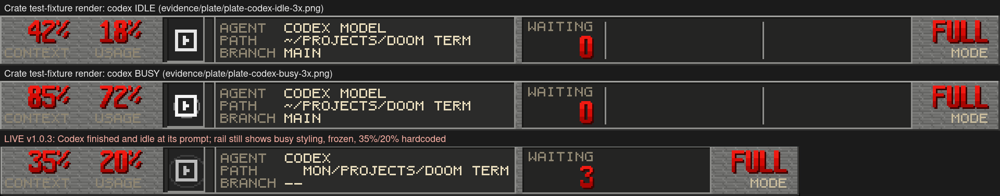
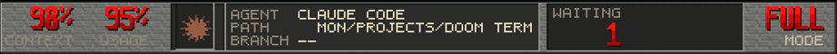
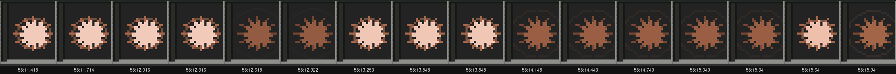
Instant, not SystemTime.// app/src/tab.rs:1350-1354
/// Doom Term has no agent conversations to show on a tab.
#[cfg(not(feature = "warp_services"))]
fn agent_indicator(_tab: &TabData, _app: &AppContext) -> Option<Indicator> {
None
}
tab.rs is absent from commit b40802299's diff, so the "restore universal agent icons" commit never touched the horizontal tab bar. Live: the claude-lab tab shows no icon while Claude runs (figure below).
app/src/doomterm/absent.rs declares pub type ConversationStatus = Infallible;. The Doom Term render_with_optional_status_badge (app/src/ui_components/icon_with_status.rs:527-545) is if let Some(status) = status { match *status {} }, which is unreachable. Upstream's pulsing status badge is driven by Option<ConversationStatus>, which in this build can only be None. Tab pulsing cannot happen without a new, non-empty local status type.
vertical_tabs.rs:7714 calls the Doom Term active_cli_agent (terminal/view.rs:25634-25683). Its title fallback is a bare substring match (title.contains("claude"), "codex", …) that runs even when no command is running. The shell title is user@host:cwd, so an idle shell in any directory whose path contains an agent's name gets labeled as that agent. Live: an idle shell in ~/.claude shows "Claude Code" with the Claude icon, and an idle shell in ~/.codex shows "Codex". No cached model or change event exists, so icon changes wait for unrelated repaints.
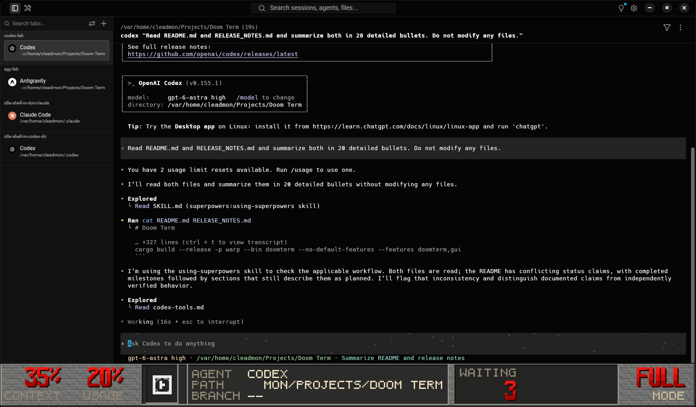
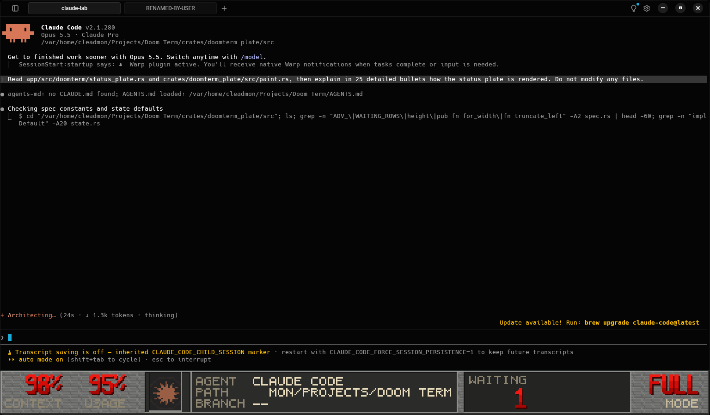
claude-lab tab has no agent icon, and the tab strip hash was constant for all 40 burst frames.agent_indicator in tab.rs from it.Infallible alias with a real local enum (Idle | Working | NeedsInput) and a Doom Term badge renderer.tcgetpgrp → /proc/<pgid>/exe|cmdline), not command text or titles. Delete the title-substring fallback.// app/src/doomterm/status_plate.rs — sample_local_agent_telemetry
Claude: newest *.jsonl anywhere under ~/.claude/projects/*/
ctx = clamp(file_bytes / 800_000, 0.02, 0.98)
usage = clamp(file_bytes / 1_500_000, 0.01, 0.95)
Antigravity: newest brain/*/.system_generated/logs/transcript.jsonl
ctx = clamp(file_bytes / 4_000_000, 0.02, 0.98)
usage = clamp(file_bytes / 8_000_000, 0.01, 0.95)
Codex: if ~/.codex is a directory → (0.35, 0.20) // lines 213-215
(the _cwd parameter is never used)
0edff578…jsonl). Every Claude tab in every window shows the same number.~/.codex exists (shown live in the R2 figure). The v1.0.3 dossier's root-cause table calls this path an "honest -- fallback".read_dir + metadata over every project directory) runs synchronously inside Workspace::render. That render only happens on workspace notifications such as a pane title change (see R1), so the percentages are also frozen between title changes. An agent that never retitles its terminal (Codex) keeps whatever number was computed when its tab was first drawn. Measured with an inotify counter on ~/.claude/projects: 0 listings during 10 s idle and 10 s of forced resizes; a manual ls registered immediately.This project already has a solved design to port by technique (nodeterm, BUSL-licensed, so don't copy code or comments):
session_id and transcript_path; Codex writes ~/.codex/sessions/…/rollout-*.jsonl with the session id). Tail that transcript backwards to the newest assistant usage. Used = input + cache_read + cache_creation tokens, and the denominator comes from the model family's window. Otherwise show --.--.view.rs:24288 passes mode: "FULL".to_string(), and PlateState::default() (crates/doomterm_plate/src/state.rs:46) does too. paint.rs:549-550 draws it in big red numerals over the label "MODE" in the old STBAR armor slot. No code anywhere produces a different value, and nothing reacts to it. The plan defines mode as internal layout state ("mode is layout state, not a claim about activity", implementation-plan.md:612), and its original slot was the sandbox tier (FULL/TREE/OFF). The shipped plate shows a sandbox-tier word, labeled as a layout mode, for a feature that doesn't exist. To a user it reads as a claim ("full sandbox"?) that is always true and means nothing.
Also dead in the same struct: chips: [true,true,true,false,false,false] (hard-coded, not painted) and table: Vec::new().
Either remove the slot and give the width to PATH/WAITING, or bind it to a real, owned state with a defined vocabulary: for example the agent's permission mode as reported by the agent (Claude: default / acceptEdits / plan / bypass; Codex: approval policy + sandbox mode from its session config), shown as -- when unknown.
The middle panel is built from agent_name, which for an agent is cli_agent.display_name() and for a shell is terminal_title_from_shell() (the raw OSC 0/2 title, e.g. cleadmon@SER6-MAX:~/Projects/Doom Term; view.rs:24247-24256, tab_metadata.rs:29-36). A rename sets the pane group's custom title, and pane_group.display_title() is only read for the other tabs' waiting rows (view.rs:24261), never for the active tab. The long title is then left-truncated mid-word with no ellipsis (X:~/PROJECTS/DOOM TERM, MAX:/VAR/HOME/CLEADMON).
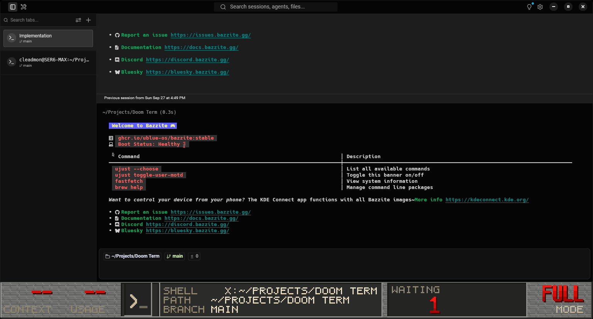
X:~/PROJECTS/DOOM TERM. (This frame also shows R7: it is a second instance that cloned the owner's first window, renamed tab included.)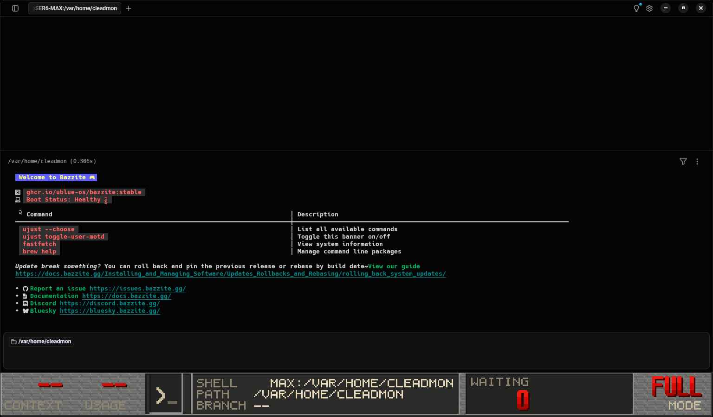
SHELL MAX:/VAR/HOME/CLEADMON is a hostname fragment, not a name. WAITING 0, FULL MODE.Name precedence: user's custom tab title → agent display name → shell title. Subscribe the plate to the pane group's title-changed event instead of recomputing per frame. Truncate with a visible ellipsis glyph at a word boundary.
| Field | Local | Inside ssh host | Why (code) |
|---|---|---|---|
| PATH | prompt chip / pwd | Plain interactive ssh host: remote-correct (warpified, verified live). ssh host 'cmd': stale local cwd | tab_metadata.rs:18-27; bootstrap not feature-gated (terminal/bootstrap.rs) |
| BRANCH | prompt git chip only (no watcher) | Warpified: remote-correct (verified live). Otherwise -- | tab_metadata.rs:49-53 |
| AGENT | command text, then title substring | Command text is ssh host, so it never matches. Falls back to title substring, which works only if the remote agent sets a title | terminal/view.rs:25634-25680 |
| BUSY | long-running block | True for the whole ssh session, regardless of any agent | terminal/view.rs:10564 |
| CONTEXT / USAGE | local newest file | Local newest file: a remote agent is shown with an unrelated local session's numbers | status_plate.rs:127 reads local $HOME |
The newer remote-server bridge (the only code that ever sets set_remote_host_id(Some(..))) is compiled out with warp_services (app/Cargo.toml:521-546, lib.rs:96-97, session.rs:184-186, 418-427). The older typed-script bootstrap survives. Nothing in the UI tells you which mechanism (if any) is backing a remote value.
Setup: an ubuntu:24.04 podman container running sshd on 127.0.0.1:2222 (ephemeral key, deleted after the review), with a git repo on branch remote-feature-branch. Real agents would need the owner's credentials copied into the container, so the remote "agent" is a clearly labeled simulation installed as /usr/local/bin/claude. It streams output and sets a Claude-Code-style title (✳ <task>). That's enough, because detection only looks at command text and titles.
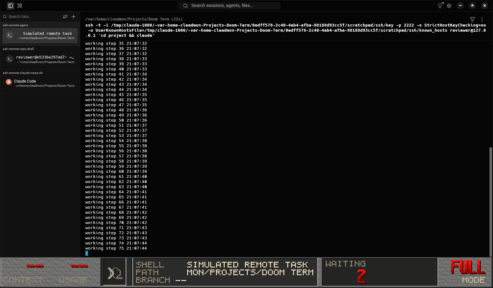
SHELL + its title text, a local PATH (the remote cwd is ~/project), BRANCH -- (remote branch is remote-feature-branch). The rail was pixel-identical across 20 frames while output streamed. The agent is invisible.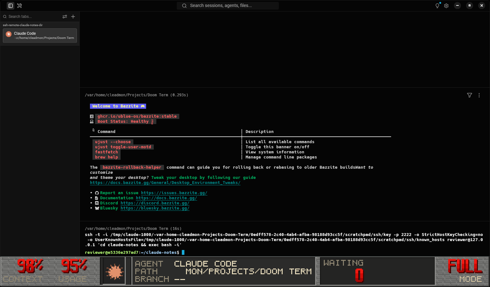
~/claude-notes, running nothing. Rail: AGENT CLAUDE CODE, 98% / 95% (this review's local transcript), busy starburst, local PATH. The tab list also says "Claude Code".Also observed: these ssh sessions were one opaque long-running block (no remote prompt blocks, no remote cwd/branch chips), so everything on the rail came from the local side. Limit of this test: every command here passed a remote command (ssh … 'cd x && …'), which Warp's SSH "warpify" wrapper doesn't intercept. So this test does not establish whether a plain interactive ssh host gets warpified in Doom Term (the Warpify settings page still exists). If it does, PATH and BRANCH could be remote-correct in that mode, but AGENT, BUSY, CONTEXT and USAGE would still be wrong for the reasons in the table.
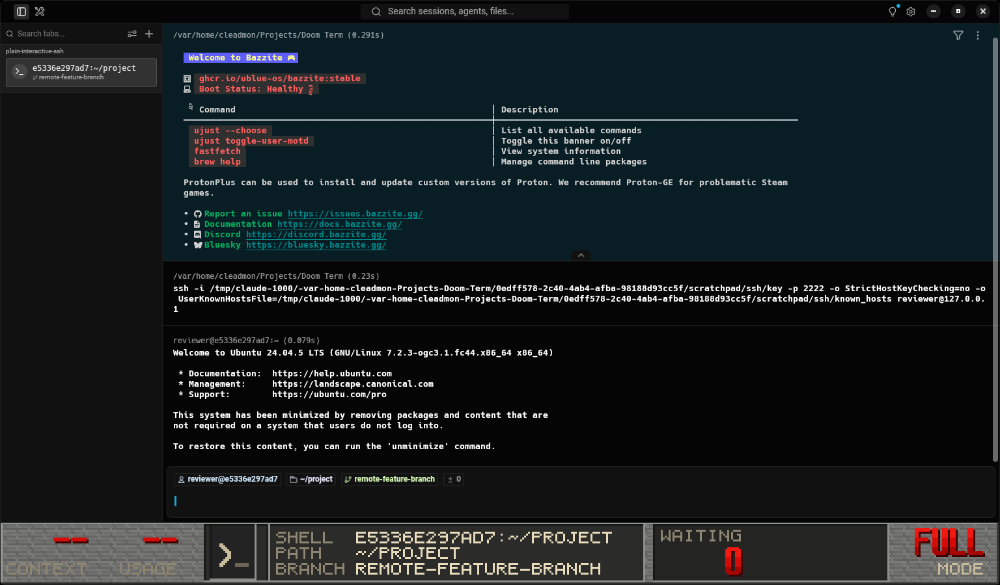
ssh host IS warpified. The remote prompt carries chips (reviewer@…, ~/project, remote-feature-branch), and the rail's PATH and BRANCH are remote-correct. The name slot is the raw remote title with a hostname hash (E5336E297AD7:~/PROJECT), and nothing on the rail says the session is remote.claude at a warpified remote promptIn a warpified session the remote command becomes its own block whose text is claude, so CLIAgent::detect matches and sample_local_agent_telemetry runs. It reads the local $HOME (status_plate.rs:127), so the rail would show the machine's newest local Claude transcript numbers for a remote agent, the same mis-attribution as the idle-shell figure above. I couldn't reproduce it live: the lab can't type (KWin's virtual backend drops synthetic input), and a queued second launch command is cleared when the ssh block hands off to the remote session (terminal/view.rs:13927). The call chain has no remote branch, so confidence is high, but it is not observed.
ssh, mosh, et, kubectl exec…) and show a REMOTE state with the host name instead of pretending to know local facts.--.-- for them during ssh.release_bundle, the feature that carries Warp's single-instance behaviourUpstream Warp on Linux is "one process, many windows": a second launch forwards <scheme>://action/new_window to the running instance over D-Bus (org.freedesktop.Application) and exits (app/src/lib.rs:1243-1266, app_services/linux/mod.rs). All of that is #[cfg(feature = "release_bundle")]. Doom Term's builds replace the feature list:
script/linux/bundle:237 FEATURES="doomterm,gui" # other channels: release_bundle,... script/windows/bundle.ps1 $FEATURES = 'doomterm,gui' # other channels: release_bundle,... .github/workflows/doomterm-ci.yml:94 --no-default-features --features doomterm,gui README.md:147 --no-default-features --features doomterm,gui
Binary proof: the installed ~/.local/bin/doomterm contains 0 occurrences of "no existing instance found to forward args to" and of action/new_window. The code isn't there.
Live proof (lab, shared D-Bus bus): instance 1 had 3 windows. Launching again started a second full process (with its own terminal-server) that restored all 3 windows again from the shared warp.sqlite, giving 6 windows across two processes. The second process also took over the io.cmleadmon.DoomTerm bus name. Both processes then write session state to the same database, and the last writer wins. On the owner's desktop the same clone happened (the second window reopened the renamed "Implementation" tab). Each launch also rotates the shared doomterm.log, so the running instance keeps logging into a file renamed out from under it (doomterm.log.old.N).
Windows too: the single-instance mutex manager (app_services/windows/mod.rs, single_instance_manager.rs:60) is gated by the same feature. RELEASE_NOTES.md:114's "isolated single-instance mutex (Local\WarpDoomTerm_SingleInstance)" can't be present in any Doom Term Windows build, and the installer's AppMutex check (windows-installer.iss:34) will never see a running app.
Add release_bundle to every Doom Term packaging and CI build (Linux bundle, Windows bundle.ps1, macOS bundle, CI workflow, README instructions). Then confirm that second launch → new window in the existing process, and that "New Window" (Ctrl+Shift+N) works. release_bundle also switches channel config to the embedded JSON (warp_channel_config/src/lib.rs:41-52), so re-run the M2 build-policy check afterwards to confirm no hosted surface returns.
docs/doom-term/implementation-plan.md:598-612 contains a precise, sensible contract for every plate field, written before implementation. The shipped code breaks nearly every row of it. The fix isn't a new design: the contract that already exists needs to be implemented.
| Field | Contract says | Shipped behaviour (b40802299) | Verdict |
|---|---|---|---|
agent | "Verified foreground executable/session association … never infer from text resembling a footer" | Command-text match, then a terminal-title substring match that runs even with no command running (terminal/view.rs:25662-25680) | Violated |
context | "-- unless both are reported … cumulative tokens are not context occupancy" | Newest transcript file's byte size ÷ constant; Codex constant 0.35 | Violated |
usage | "reported rate-limit window and consumed fraction … no conversion from token totals" | Byte size ÷ constant; Codex constant 0.20 | Violated |
path | "--; never the app process cwd or a default ~" | unwrap_or_else(|| "~") (workspace/view.rs:24212). Live: Settings pane shows PATH ~ | Violated |
branch | "existing current_git_branch adapter … no local branch for an SSH cwd" | Prompt-chip only; -- for any tab whose agent started before a chip existed. Correct under warpified SSH | Partly |
waiting | "sessions with an observed stop/turn-complete/needs-input transition … no inferred rows" | Every non-active tab is a waiting row with hard-coded status: "quiet" (workspace/view.rs:24258-24269). At normal widths only the count renders | Violated |
pulse, phase | "Monotonic animation clock gated by verified activity state … Static when idle/unknown" | Wall-clock sample on title-change re-render; "busy" = long-running block, so it's never static while an agent is open | Violated |
mode | "layout state, not a claim about activity" | Painted in 3× red as "FULL / MODE" in the old sandbox-tier slot, constant | Violated |
chips | "Only actual local toggle/alert state with a registered owner" | Hard-coded [true,true,true,false,false,false] (not painted, but still fabricated state) | Dead |
A Sonnet 5 sub-reviewer audited the dossier claim-by-claim and re-ran its test suite. I spot-checked the load-bearing citations myself (tab.rs:1350, absent.rs, icon_with_status.rs:527, status_plate.rs:213-215, terminal/view.rs:10564). All matched.
| Dossier claim | Where | Verdict | Evidence |
|---|---|---|---|
Codex path is an "honest -- fallback" | §10.1 | False | status_plate.rs:213-215 returns (Some(0.35), Some(0.20)) whenever ~/.codex exists. Shown live in R2/R3. |
| "Zero fabricated dummy telemetry" (Loop 3.2) | §10.2 | False | Same constants. Claude/agy values are byte-size heuristics. |
| Context/usage are "sampled telemetry" | §10.1 | Misleading | File size ÷ arbitrary constant, from whichever session wrote last. |
| "10 Agent Variants" gallery shows the fix | §10.3 | Misleading | All 20 idle/busy PNGs are a side effect of test_all_agent_marks_render_distinct_pixels (crates/doomterm_plate/src/paint.rs:727-835), which builds PlateState { is_busy: true, phase: 0.5, context: Some(0.85), … } by hand. It never touches detection, telemetry, tabs, or the app. |
| "Universal agent brand icons everywhere" (RELEASE_NOTES v1.0.3) | §10 / notes | False | tab.rs is not in b40802299's diff, and its agent_indicator returns None. Vertical tabs only. |
| 49-loop verification ledger, 7×7 PASS | §10.2 | Unverifiable theatre | PASS badges without linked command output. Only the test run and clippy rows are checkable. |
| "cargo test -p doomterm_plate … 9 passed" | §10.2 Loop 6.1 | True | Re-run: 9 passed, 0 failed, 0.09 s. These tests cover plate geometry/raster only. |
| Windows "isolated single-instance mutex" | RELEASE_NOTES:114 | False | Manager is release_bundle-gated; Doom Term builds drop that feature (R7). |
| M2 "compile-excluded cloud/AI" | README:40 | Overstated | GUI settings are clean, but the shipped CLI is still "Oz" with login, agent run, mcp, model subcommands (§12). |
| gui-smoke launch/terminal/settings screenshots | §3 | Genuine | Real xvfb captures, but none shows an agent, the rail under load, or tabs. |
| Rename / SSH / FULL / multi-instance addressed | — | Omitted | None of these reported failures appears in the "comprehensive" root-cause table. |
doomterm --version prints Oz <unknown>. doomterm --help describes itself as "The orchestration platform for cloud agents" and lists agent, mcp, run, model, memory-store, memory, login ("Log in to Warp"), logout, whoami, plus an --api-key option (crates/warp_cli/src/lib.rs:128-130). Running whoami, agent run, mcp list or model list (inside a network-less namespace, isolated state) booted the full app runtime (terminal-server spawn, SQLite, "Starting warp", logs under an oz/ directory) and then hung with no output until killed, 4 of 4 times. Caveat: the namespace also broke D-Bus, which may contribute to the hang. Whatever the cause, a local-only product shouldn't advertise hosted commands.
app_version() comes from GIT_RELEASE_TAG at compile time (crates/warp_core/src/channel/state.rs:398-402). The CI workflow sets it only in the Windows job (doomterm-ci.yml:185), not in the Linux build step (line 94), so Linux binaries report <unknown>. The embedded macOS plist hard-codes CFBundleShortVersionString 1.0.0 (app/src/bin/doomterm.rs), which is stale at v1.0.3.
With Settings (or any non-terminal pane) active, the rail shows SHELL TERMINAL / PATH ~ / BRANCH --: a fallback name and a default ~ the contract forbids.
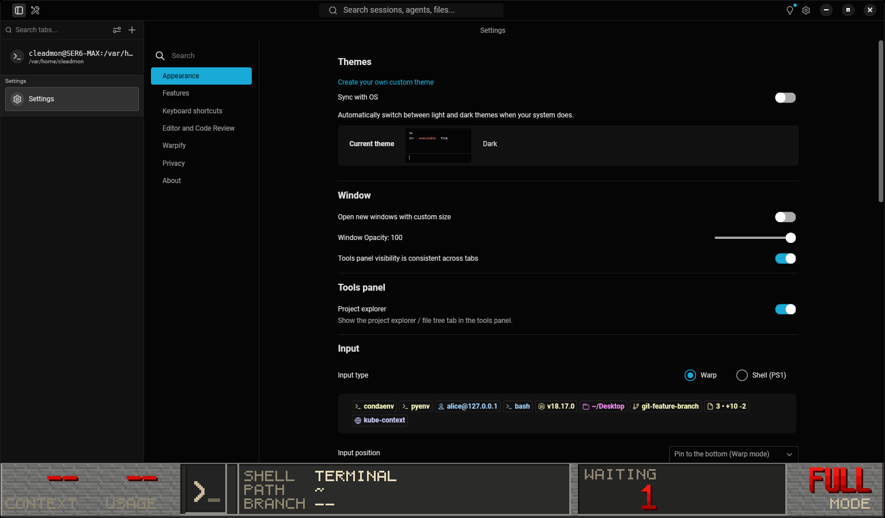
TERMINAL, PATH ~, WAITING 1. (Also shown: hosted pages really are gone from Settings; only Appearance, Features, Keyboard, Editor, Warpify, Privacy and About remain.)Every non-active tab becomes a waiting row with a hard-coded "quiet" status, including plain idle shells and the Settings tab. The plate is laid out at 3× integer scale (status_plate.rs:20-21), so window width ÷ 3 = plate units. Measured by linking the real crate (PlateSpec::waiting_columns()):
| Window width | Plate units | Waiting zone | Name columns | Rects painted |
|---|---|---|---|---|
| 1280 px | 426 | 36 | 0 | 3,087 |
| 1536 px (owner's window) | 512 | 122 | 0 | 3,705 |
| 1920 px | 640 | 250 | 2 | 4,669 |
| 2560 px | 853 | 463 | 2 | 5,629 |
So at the owner's window size the WAITING panel is a bare count of "other tabs". Every render also rebuilds 3–8k one-pixel-scaled rectangles, which is cheap on a GPU but a reason to cache the op list until the state actually changes.
X:~/PROJECTS/DOOM TERM, MAX:/VAR/HOME/CLEADMON, MON/PROJECTS/DOOM TERM: left-truncation keeps the tail and drops the marker, so a fragment of a hostname reads like a name.
render_doomterm_status_plate calls display_working_directory, current_git_branch, active_cli_agent (locks), is_long_running (locks) and terminal_title_from_shell (locks) back to back, each taking and releasing model.lock(). They aren't nested, so this is contention with the PTY thread rather than deadlock, but AGENTS.md asks for one short lock scope. Fold them into one snapshot read.
workspace:save_app bursts on startupHundreds of save_app dispatches were logged in the first seconds of each instance. The dispatch sites are upstream code (app_menus.rs, lib.rs:3246-3299, AppStateChanged), and I have no evidence Doom Term causes it, so I'm listing it for completeness only.
Ordered so that each step removes a class of wrong output before the next adds capability. Steps 1–2 are small, packaging-only changes. Step 3 is the architectural fix that R1, R2, R3, R5 and R6 all depend on.
(None, None) from sample_local_agent_telemetry for every agent and delete the Codex constants. Remove the title-substring fallback. Replace the "~"/"terminal" fallbacks with --. Remove or blank the FULL/MODE slot. The rail then shows -- where it doesn't know, which is what the contract requires.release_bundle to the Linux bundle, Windows bundle.ps1, macOS bundle, CI workflow and README build lines. Set GIT_RELEASE_TAG in every CI job. Re-run script/doomterm/check-build-policy.py, since release_bundle switches channel config to the embedded file.DoomTermAgentModel (per TerminalView) that:
tcgetpgrp on the PTY fd → /proc/<pgid>/exe and cmdline). This also tells you when the foreground is ssh/mosh and the session is remote;session_id + transcript_path; Codex rollout file by session id) and tails it on a background task for context tokens;render.ConversationStatus a real local enum in place of Infallible, and implement tab.rs::agent_indicator.--help should list only local commands, under a Doom Term name. Gate or remove login/agent/mcp/model/memory/run/whoami in the doomterm build.The review above describes the installed v1.0.3 binary. The captures below are from a rebuilt v1.1.0 candidate in a private KWin display and isolated XDG profile. The agent process and transcript readers run off the UI thread; one monitor supplies the plate and both tab layouts.
| Review finding | v1.1.0 candidate | Evidence |
|---|---|---|
| R1/R2: idle vs working, rail and tabs | The local agent mark pulses while its session reports work. The rail, horizontal tab, and vertical tab all use the Doom Term pixel mark. | Live frame and animation captures below. In the 40-frame composited burst, tab and rail regions changed together in 24 of 39 adjacent pairs; both stayed static in the other 15. |
| R3: context and usage | Claude and Codex context comes from the pane's own session record. Codex usage comes from local records; Claude account usage is an off-by-default Anthropic lookup. Unknown data is shown as a dash. | The live turn-complete pair below shows context increasing from 5% to 6% while the working ring turns off. Session parser and usage tests cover the record formats. |
| R4: FULL MODE | Replaced by ADD, DEL, and FILES from the active local Git repository. | The live frame shows the DIFF well; pure Rust geometry tests cover narrow and wide plates. |
| R5: tab rename | The plate prefers a custom tab title over the agent or shell name. | The live frame shows the renamed Implementation tab and matching plate name. |
| R6: SSH | Local process detection identifies SSH, mosh, and related clients as remote; local agent transcript and usage are withheld for remote panes. | Foreground parser tests and the existing SSH lab repro. Reading an agent that runs on the remote host remains outside this release. |
| R7: repeated launch | Release builds include release_bundle and forward a second launch to the running app. | The second-launch window and process transcript below; the build-policy graph checks the release feature set. |
| Other: hosted CLI | doomterm --help lists local commands and --version uses the Doom Term name. | CLI unit tests and a live invocation; tagged builds set GIT_RELEASE_TAG. |
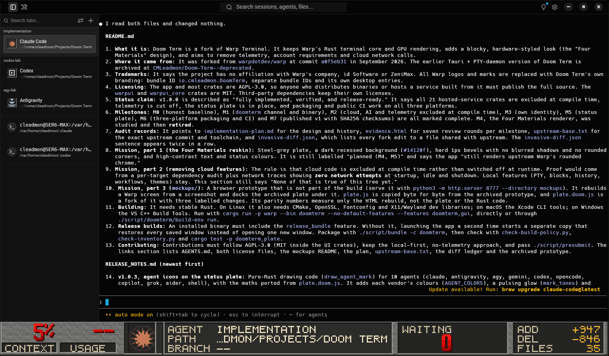
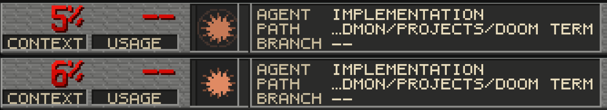
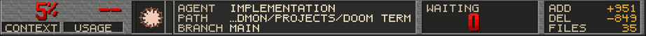
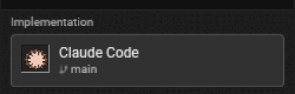
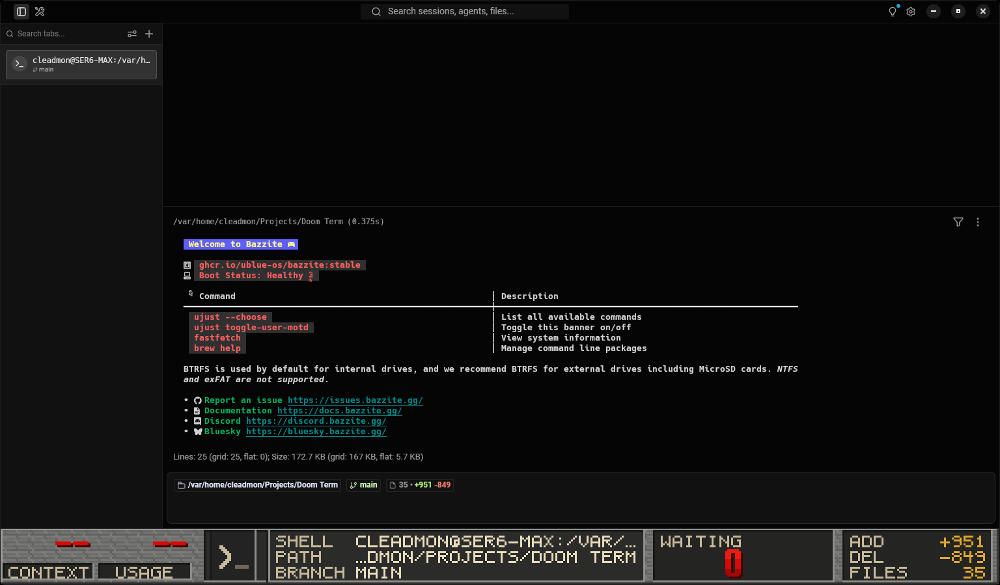
These screenshots establish Linux GUI behavior in the isolated lab. Pure Rust tests cover parsing and plate geometry. Packaged behavior on macOS and Windows depends on the three-platform release build.